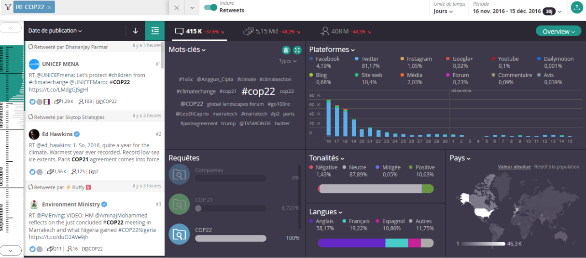
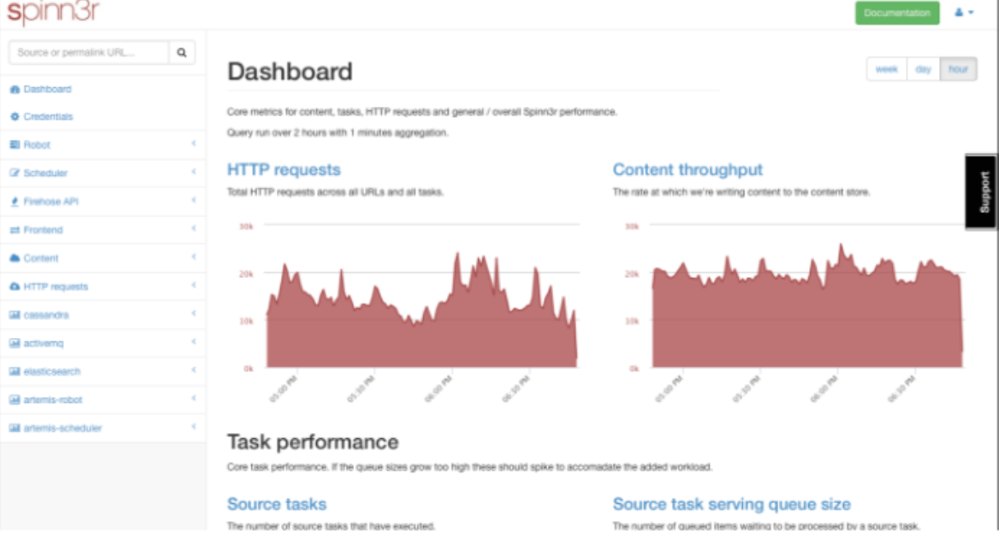
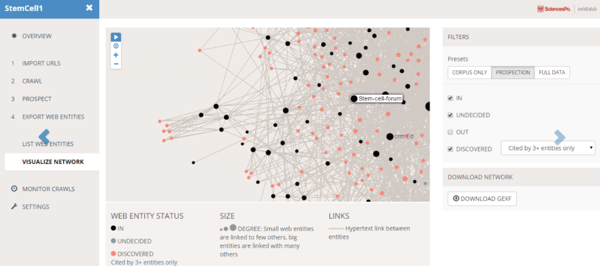
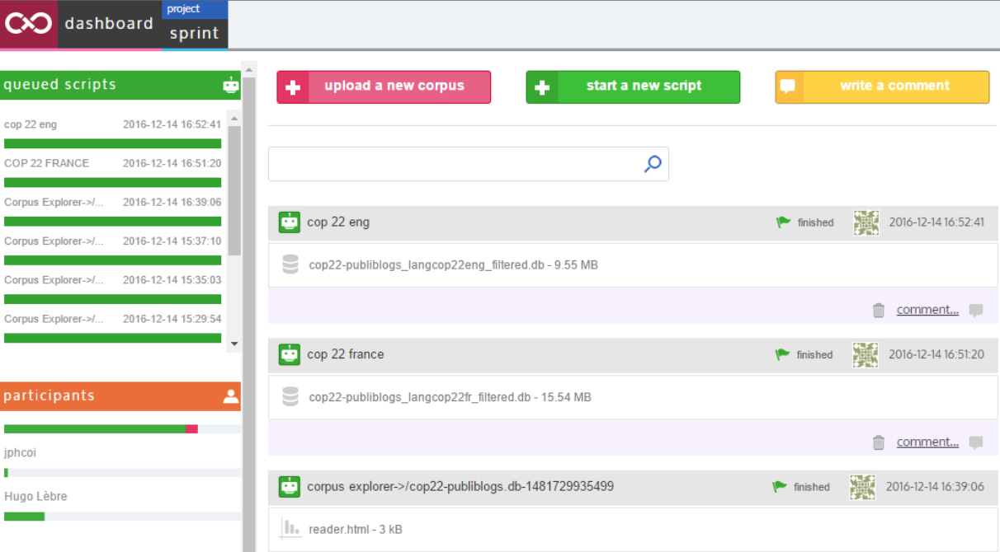
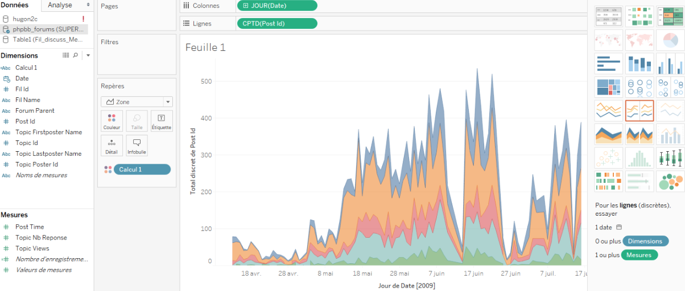
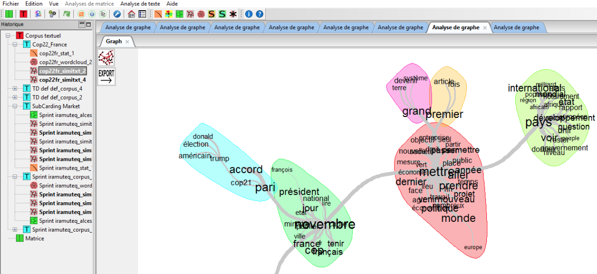

Les outils mobilisés
Nous allons vous présenter les différents outils que nous avons eus à disposition. Certains nous ont servi et d’autres non, ils se sont parfois heurtés à la faisabilité de nos hypothèses et à l’évolution du sujet.
Les sources de données
Dans l’optique de mener un sprint recherche sur la COP21 et sur la COP22, deux sources de données du web social ont été mis à notre disposition.
Radarly est un outil en ligne développé par la société Linkfluence, spécialisé dans le web social. Radarly se veut à la fois un outil de veille du web social, mais aussi de travail grâce à des données collectées en temps-réel et exploitables par la suite. Cet outil donne accès à l’intégralité de Twitter et d’Instagram, et collecte de façon continue les pages publiques de Facebook, les contenus des blogs, des sites web ou de Youtube. Tous ces contenus sont accessibles via un Dashboard, où il est possible d’effectuer des requêtes pour obtenir les données souhaitées, comme la langue ou le type de média souhaité.
Les données de Radarly sont téléchargeables en format .csv, mais sont limitées à 10 000 entrées, ce qui complique la tâche lorsqu’il s’agit de constituer un corpus important. Il faut alors procéder à plusieurs extractions.
Spinn3r est un outil semblable à Radarly puisqu’il se veut un outil d’indexation du web et exploitable sous la forme d’un dashboard. Il propose globalement les mêmes fonctionnalités que Radarly, et les données extraites sont au format .json. La différence se fait surtout au niveau de la requête, Radarly donne accès à un thème de façon illimitée, tandis que Spinn3r donne accès à un nombre défini de requêtes par unité de temps.
Pour notre analyse, nous nous sommes exclusivement servis de Radarly puisque le temps nous a manqué pour utiliser Spinn3r. Nous avons ainsi fait confiance aux entités nommées de Radarly, sans pourvoir porter un regard à la fois critique et objectif sur la manière d’indexer le web social par manque de temps, les données de Radarly n’ayant pas été mises en confrontation avec celles de Spinn3r.
Faire un réseau des communautés de la blogosphère
Afin de créer une cartographie de la blogosphère telle que nous l’avions imaginée, deux outils avaient été retenus, ils nous semblaient adaptés et complémentaires pour catégoriser les blogs.
Dans l’optique de constituer une cartographie des blogs traitant de la COP21 et de la COP22, il a été question d’utiliser hyphe, le logiciel du laboratoire Medialab. Hyphe crawle les pages des sites internet pour repérer les url présentes afin d’en faire un graphe de citations. Il est ainsi possible de repérer des communautés de blogs qui se citent, le lien entrant faisant office d’autorité dans la relation. Plus un site est cité par les autres, plus il est important. Or, il a été difficile de mettre en application notre hypothèse qu’il existerait peut-être des communautés de blogs en grande partie à cause de soucis techniques sur le serveur Hyphe de l’Université, mais aussi parce que le traitement par les url avait ici une limite. Avec les données Radarly, nous avions accès aux adresses des blogs, et aux url des articles. En faisant une cartographie des blogs, il aurait été difficilement possible de voir si les liens provenaient de la COP21 ou d’autres articles, alors qu’en utilisant les url des articles, nous aurions eu un grand nombre de nœuds solitaires puisque les articles ne citent pas tous d’autres blogs.
Cortext Manager est une plateforme digitale d’analyse de données développée par IFRIS (Institut Francilien Recherche, Innovation, Société). Il permet notamment de faire des analyses sémantiques à partir de corpus de données en fonction de plusieurs critères comme le texte, le temps, les auteurs ou encore la langue.
Il était au départ question de s’en servir pour repérer des clusters sémantiques et de repérer quels blogs étaient spécifiques à quels thèmes. Après plusieurs essais, nous avons décidé de mener notre analyse exclusivement sur Cortext, puisqu’il était possible d’arriver à des résultats plus complets que sur Hyphe, notamment sur les tags des blogs qu’il était difficile de faire manuellement en quelques jours. Nos visualisations de graphes sémantiques et d’acteurs ont ainsi été effectuées sur cet outil.
Visualiser les données
Tableau Software est un logiciel de visualisation de données, il supporte une multitude de formats allant du .csv au .xlsx en passant par le .sql. Tableau est doté de fonctionnalités de visualisations et de mises en forme des données plus avancées que sur Excel.
Pour le projet, Tableau a été utilisé pour constituer des visualisations des statistiques de nos corpus : le nombre de publications, le nombre d’auteurs, l’évolution dans le temps des publications, etc.
Faire des analyses statistiques sur des corpus texte
Il avait été question de mener des études sémantiques sur la blogosphère. IRaMuTeQ est un logiciel utilisant la lexicométrie afin d’avoir une vue à la fois qualitative et quantitative sur un corpus de textes. Les opérations possibles sont notamment une analyse de cooccurrence des termes sous forme de graphe, et une application de la méthode Alceste qui permet de recomposer les univers mentaux du discours par une classification hiérarchique descendante (CHD).
Au vue de la taille et de la composition des corpus, à savoir des articles de quelques milliers de textes, il a été impossible de faire une analyse textuelle, nos machines n’étant pas assez puissantes pour supporter autant de données.